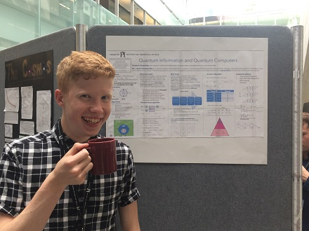
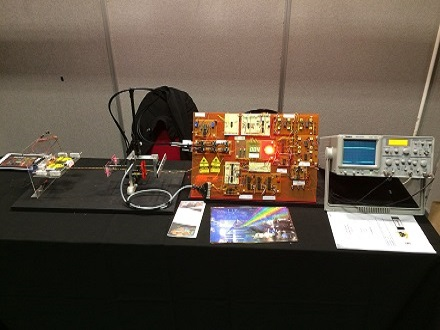
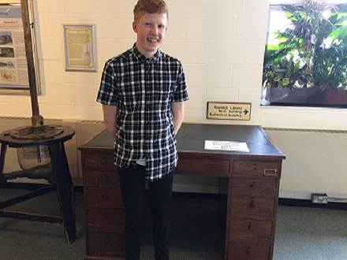

		<!--
		<!-- Work -->
        <section id="work" class="main style3 primary">
            <div class="content">
                <header>
                    <h2>My Work</h2>
                    <p>Use the following links to learn more about my work so far.</p>
                </header>

                <!-- Gallery  -->
                    <div class="gallery">
                        <article class="from-left">
                            <!--Academic: University-->
                            <a href="images/fulls/uni.JPG" class="image fit">University of Cambridge</h3>
                                <p>Currently in 4th (integrated masters) year.</p>
                                <ul>
                                <li>Third year results: First class, 20th in cohort. Awarded Foundation Scholarship and Foundress Prize.</li>
                                <li>Second year results: Exam percentages in high first range (No official rankings given in 2020).</li>
                                <li>First year results: First class, 4th in cohort of 604 students. Awarded Satish Kumar Aggarwal Prize for outstanding first-year performance in Mathematics or Natural Sciences and a College Scholarship.</li>
                                </ul>
                                <p>On top of my academic work, I work as the Sponsorship Officer of the University Physics Society. Involves obtaining funding for the talks and events run by the society, through negotiation with potential sponsors and organising events beneficial to both sponsors and the society.</p>"
                                alt="" /></a>
                        </article>
                        <article class="from-right">
                            <!--Glasgow 2021-->
                            <a href="images/fulls/glasgow.PNG" class="image fit">Glasgow Research Internship</h3>
                                <p>In Summer 2021, I worked with Professor Martin Weides' Quantum Circuits Group on simulation of a superconducting qubit package and identification of noise sources.</p>
                                <p>The work involved EM simulation using Ansys HFSS.</p>
                                <p>As part of the work, I attended the IOP 6th Superconductivity Summer School and the Qiskit Global Summer School.</p>"
                                 alt="" /></a>
                        </article>
                        <article class="from-left">
                            <!--BT 2020-->
                            <a href="images/fulls/BT.PNG" class="image fit">Royal Society Summer Research Intern</h3>
                                <p>In Summer 2020, I worked with the Cavendish Laboratory and BT on guiding millimetre-waves via metamaterial surfaces and extending 5G range.</p>
                                <p>The project involved raytracing modelling using MATLAB, with custom reflector models and optimisation work.</p>
                                <p>I presented my work at the Royal Society Industry College networking event.</p>"
                                 alt="" /></a>
                        </article>
                        <article class="from-right">
                            <!--ISSYP 2017-->
                            <a href="images/fulls/issyp1.JPG" class="image fit">ISSYP 2017</h3>
                                <p>In July 2017, I attended of the International Summer School for Young Physicists at the Perimeter Institute in Canada. I was one of 40 students studying advanced Physics concepts, such as Special Relativity, with lectures from renowned researchers in various fields of Theoretical Physics. Specifically, my mentorship group focused on Quantum Computing, including the Grover Search algorithm and Shor Code, culminating in a group presentation on the topic. One highlight was the visit to SNOLAB, where we were guided through the experiments in their subterranean clean room.</p>"
                                 alt="" /></a>
                        </article>
                        
                        <article class="from-left">
                            <!--STAR Polaris Project-->
                            <a href="images/fulls/star_polaris.JPG" class="image fit">STAR-Polaris Project</h3>
                                <p>During two summer holidays, I worked for 6 weeks with the Photonics Academy of Wales, investigating various Photonics concepts, before experimental work with polarising filters and birefringent materials led me to choose polarised light as a project theme. I studied the linear polarisation characteristics of Rayleigh Scattering in the blue light of the sky, before designing and building a solar tracking device that utilised three coordinate systems to allow a photovoltaic cell to track the Sun. I completed this project during August 2017, together with a scientific report (which can be viewed below).</p> <p>The first system consisted of an array of 7 Photodiodes controlling the photovoltaic cell’s vertical orientation, while the second system utilised the azimuth of highest degree of linear polarisation, orthogonal to the Sun’s incident direction, to control the horizontal orientation. The third system reset the angular orientation of the entire project at night. The optoelectronic circuitry which I designed and constructed included Photodiodes, Operational Amplifiers, Voltage Comparators, Monostables and Multivibrators (for the Servo Drivers), together with D-flip flops and the entire logic control circuitry.</p>
                                <a href='https://drive.google.com/file/d/0B4wpBG84CSgCQU1vLWNiQ01HTE0/view?usp=sharing'>Link to PDF Report</a>
                                <br />
                                <a href='https://drive.google.com/file/d/0B4wpBG84CSgCdnRsNllDSjllb3M/view?usp=sharing'>Video of Working Angular System (1)</a>
                                <br />
                                <a href='https://drive.google.com/file/d/0B4wpBG84CSgCM3NLcWwyaXI5NEE/view?usp=sharing'>Video of Working Angular System (2)</a>
                                <br />
                                <a href='https://drive.google.com/file/d/0B4wpBG84CSgCbmM0ZGNhMmU5bTQ/view?usp=sharing'>Video of Working Horizontal System</a>
                                <br />
                                <a href='https://drive.google.com/file/d/0B4wpBG84CSgCTHcwRnc1QzhnakU/view?usp=sharing'>Video of Working Reset System</a>"
                                 alt="" /></a>
                        </article>
                        <article class="from-right">
                            <!--Level Project-->
                            <a href="images/fulls/level.JPG" class="image fit">LEVEL Project</h3>
                                <p>I led an Engineering Education Scheme Wales team to design and construct a Self-Levelling Platform able to be pre-set to return to any angular orientation relative to the horizontal. This project incorporated a Lenticular Grating, Laser Diode, Rotational Optical Encoder, and processing circuitry. The grating divided the laser beam into multiple beams which were selectively incident on 6 specific optical fibres which formed the sensing mechanism. The Optical Encoder indicated the pre-set angle to which the platform could return. After competing with 25 other teams, we won the AIRBUS ‘Best Application of Engineering and Technology’ award (and CREST Gold awards), qualifying for the 2018 National Big Bang Final. Leadership gave me experience in organising a project involving extensive circuit design and testing. Resulting from the Big Bang Final, I was awarded the EESW Runner-Up Engineer of the Year Award.</p>
                                <a href='https://drive.google.com/file/d/0B4wpBG84CSgCbFZHQmVVbW1hMk0/view?usp=sharing'>Link to PDF Report</a>
                                <br />
                                <a href='https://drive.google.com/file/d/0B4wpBG84CSgCeC1IVGdxLUJmMlk/view?usp=sharing'>Video of Working System</a>
                                <br /><br /><br /><br /><br /><br /><br /><br />"
                                alt="" /></a>
                        </article>
                        <article class="from-left">
                                <!--Academic: School-->
                            <a href="images/fulls/school.JPG" class="image fit">
                                School Work</h3>	
                                        <p>Alongside my formal qualifications (A Levels: 4 A*s, 1 A (Physics, Chemistry, Maths, Further Maths and Biology), GCSEs: 12 A*), I have had many other school involvements that I think are worthy of mentioning. I am passionate about Mathematics, and I volunteer to teach year 7 pupils Mathematical concepts beyond their curriculum.</p>
                                        <p>As Head Boy, I organised the S5 voluntary Junior Teaching Scheme for Reading and Mathematics, and as a member of the Sixth Form Council, I helped organise charity work such as Children in Need.</p>" 
                                 alt="" />
                                </a>
                        </article>
                        <article class="from-right">
                            <!--QCSYS 2018-->
                            <a href="images/fulls/qcsys.JPG" class="image fit">QCSYS 2018</h3>
                                <p>In Summer 2018, I attended the Quantum Cryptography School for Young Students at the Institute for Quantum Computing. This involved multiple courses of lectures covering quantum mechanics, classical and quantum cryptography, linear algebra and the theory and implementation of quantum cryptography and quantum computing. We performed experiments and had small group discussions with the resident researchers.</p>"
                                 alt="" /></a>
                        </article>
                        <article class="from-left">
                            <!--Other Qualifications-->
                            <a href="images/fulls/qual2.jpg" class="image fit">Other Qualifications</h3>
                                         <ul>
                                            <li><strong>CS50:</strong> I recently finished the Harvard CS50 course on edx, which allowed me to bring together all of the separate skills I have previously learned while programming as a hobby, while also teaching me valuable skills in new languages.</li>
                                            <li><strong>UKMT Maths Challenge:</strong> In 2017, I achieved Gold in the Senior Mathematical Challenge (with Best in School) and a Merit in the subsequent Kangaroo, while also participating in the Team Mathematical Challenge regional final, where we won Best State School. In 2018, I qualified for and competed in the first and second rounds of the British Mathematical Olympiad.</li>
                                            <li><strong>RYLA:</strong> The Rotary Youth Leadership Award (RYLA) gave me the opportunity to experience exciting outdoor activities, competitive problem solving tasks in teams, diplomatic negotiations and common business roles. These were combined together in the ‘Business Game’. This involved 4 teams competitively running separate business to achieve overall goals, which were the greatest revenue and the completion of a final raft building challenge.</li>
                                        </ul>
                                        <br /><br /><br /><br /><br /><br /><br /><br />"
                                  alt="" /></a>
                        </article>
                        <article class="from-right">
                            <!--Cavendish-->
                            <a href="images/fulls/cav.JPG" class="image fit">Cavendish Work Experience</h3>
                                <p>In August 2017, I attended Work Experience with the Isaac Physics group at the Cavendish Laboratory, where I assisted in writing questions and concept pages for their website.</p> 
                                <p>I valued the opportunity to perform undergraduate experiments, such as investigating the uses of thin lenses, and then to write a full report on my findings.</p>"
                                 alt="" /></a>
                        </article>
                    </div>

            </div>
        </section>
    -->